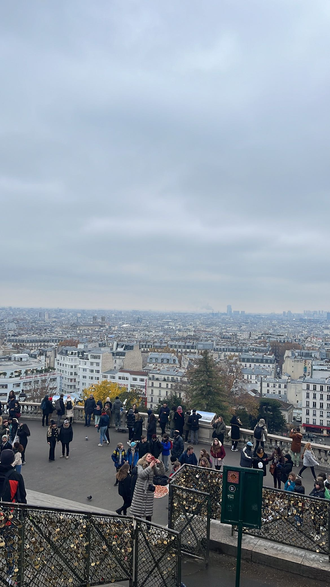
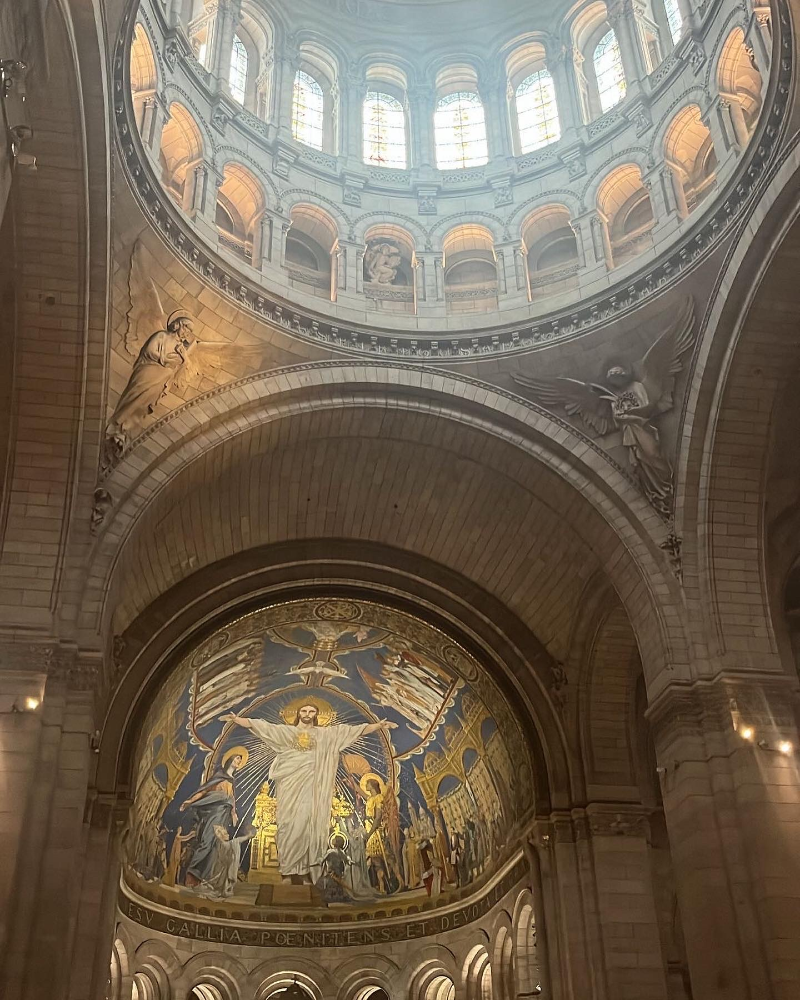
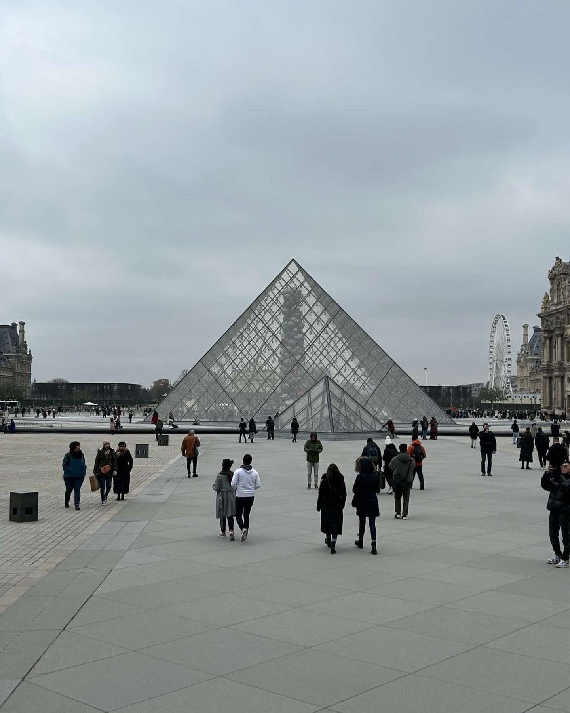

Started bright and early with a 10am checkout, however we missed our free breakfast today so were all pretty hungry. Quick metro ride back to the centre to try and find some breakfast but lunch was starting at most cafes. We came across the wall of love that had ‘I love you” written in over 200 languages. After a quick photoshoot in front of the wall we begin to walk up a very large hill towards the Sacred-coeur Basilica church.
When we arrived at the top there was a beautiful view over Paris and a stunning church behind. Still hungry we decided to continue looking for some food before going in. We came across a small brunch cafe run by a friendly Australian couple with very nice food for all of us. We headed back up to the Church for a walk around. It was amazing inside, a very peaceful place to be. After a short sit down and reflection, me and Aimee lit a candle and headed back down the hill to the metro. Next stop, the Louvre.
We arrived through the back so was able to walk through the grounds before coming to the pyramid entrance. Down the stairs and into the maze of the underground museum. We saw lots of amazing statues and paintings including the Mona Lisa, The Raft of the Medusa and Venus de Milo. We explored for around two hours and had seen about 25% of it however we had a flight to catch soon. It took nearly half and hour to find a way out of the maze so we didn’t have long to walk around the surrounding area.
We wandered around the area and found a supermarket to grab some snacks before the flight. Back on the metro for the last time to the train station for a train back to the airport. Very quick through security so had two hours to relax at the terminal. We landed 20 minutes early and got back to the frozen car very quickly. Defrosted while we packed the car and we were off home. At the top of the peaks the very thick snow falling made it very difficult to see one foot in front of us. With lots of slipping and skidding across the road we made it home in one piece but not before a final Maccies. A great trip had by all and looking forward to our next adventure. Thanks for reading, I hope you enjoyed.


